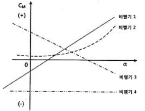
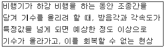
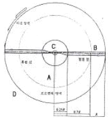
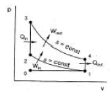
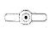
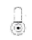
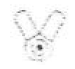
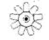
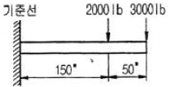

항공산업기사 (2015-05-31 기출문제)
1과목: 항공역학
1. 비행기가 1000km/h의 속도로 10000m 상공을 비행하고 있을 때 마하수는 약 얼마인가?(단, 10000m 상공에서의 음속은 300m/s이다.)
- 0.50
- 0.93
- 1.20
- 3.33
(정답률: 74%)

2. 이용동력(PA), 잉여동력(PE), 필요동력(PR)의 관계를 옳게 나타낸 것은?
- PA + PE = PR
- PR × PA = PE
- PE + PR = PA
- PA × PE = PR
(정답률: 77%)
3. 항공기 이륙거리를 짧게 하기 위한 방법으로 옳은 것은?
- 정풍(Head wind)을 받으면서 이륙한다.
- 항공기 무게를 증가시켜 양력을 높인다.
- 이륙시 플랩이 항력증가의 요인이 되므로 플랩을 사용하지 않는다.
- 기관의 가속력을 가능한 최소가 되도록 한다.
(정답률: 91%)
4. 헬리콥터가 전진비행 시 나타나는 효과가 아닌 것은?
- 회전날개 회전면의 앞부분과 뒷부분의 양항비가 달라짐.
- 회전면 앞부분의 양력이 뒷부분보다 크게 됨.
- 왼쪽 방향으로 옆놀이 힘(roll force)이 발생함.
- 유효 전이 양력 발생
(정답률: 53%)
5. 비행기가 2500m 상공에서 양항비 8인 상태로 활공한다면 최대 수평활공거리는 몇m인가?
- 1500
- 2000
- 15000
- 20000
(정답률: 90%)
6. 비행기의 정적세로안정성을 나타낸 그림과 같은 그래프에서 가장 안전한 비행기는? (단, 비행기의 기수를 내리는 방향의 모멘트를 음(-)으로 하며, CM은 피칭모멘트계수, α는 받음각이다.)

- 비행기 1
- 비행기 2
- 비행기 3
- 비행기 4
(정답률: 73%)
7. 대기권을 낮은 층에서부터 높은 층의 순서로 나열한 것은?
- 대류권 - 극외권 - 성층권 - 열권 - 중간권
- 대류권 - 성층권 - 중간권 - 열권 - 극외권
- 대류권 - 열권 - 중간권 - 극외권 - 성층권
- 대류권 - 성층권 - 중간권 - 극외권 - 열권
(정답률: 92%)
8. 프로펠러의 효율이 80%인 항공기가 기관의 최대 출력이 800ps인 경우 이 비행기가 수평 최대속도에서 낼 수 있는 최대 이용마력은 몇 ps인가?
- 640
- 760
- 800
- 880
(정답률: 80%)
9. 속도가 360km/h, 동점성계수가 0.15cm2/s인 풍동 시험부에 시위(Chord)가 1m인 평판을 넣고 실험할 때 이 평판의 앞전(Leading edge)으로부터 0.3m 떨어진 곳의 레이놀즈수는 얼마인가? (단, 레이놀즈수의 기준속도는 시험부속도이고, 기준길이는 앞전으로부터 거리이다.)
- 1x105
- 1x106
- 2x105
- 2x106
(정답률: 57%)
10. 프로펠러의 직경이 2m, 회전속도 1800rpm, 비행속도 360km/h일 때 진행률(advance ratio)은 약 얼마인가?
- 1.67
- 2.57
- 3.17
- 3.67
(정답률: 49%)
11. 키돌이(loop)비행 시 발생되는 비행이 아닌 것은?
- 수직상승
- 배면비행
- 수직강하
- 선회비행
(정답률: 69%)
12. 항공기가 수평비행이나 급강하로 속도를 증가할 때 천음속 영역에 도달하게 되면 한쪽날개가 실속을 일으켜서 양력을 상실하여 급격한 옆놀이를 일으키는 현상을 무엇이라 하는가?
- 딥 실속(Deep stall)
- 턱 언더(Tuck under)
- 날개 드롭(Wing drop)
- 옆놀이 커플링(Rolling coupling)
(정답률: 74%)
13. 항공기의 방향 안정성이 주된 목적인 것은?
- 수평 안정판
- 주익의 상반각
- 수직 안정판
- 주익의 붙임각
(정답률: 87%)
14. 날개골의 모양에 따른 특성 중 캠버에 대한 설명으로 틀린 것은?
- 받음각이 0도 일 때도 캠버가 있는 날개골은 양력을 발생한다.
- 캠버가 크면 양력은 증가하나 항력은 비례적으로 감소한다.
- 두께나 앞전 반지름이 같아도 캠버가 다르면 받음 각에 대한 양력과 항력의 차이가 생긴다.
- 저속비행기는 캠버가 큰 날개골을 이용하고, 고속 비행기는 캠버가 작은 날개골을 사용한다.
(정답률: 78%)
15. 받음각이 0도일 경우 양력이 발생하지 않는 것은?
- NACA 2412
- NACA 4415
- NACA 2415
- NACA 0018
(정답률: 91%)
16. [보기]와 같은 현상의 원인이 아닌 것은?

- 쳐든각 효과의 감소
- 뒤젖힘 날개의 비틀림
- 뒤젖힘 날개의 날개끝 실속
- 날개의 풍압중심이 앞으로 이동
(정답률: 62%)
17. 항공기의 중립점(NP)에 대한 정의로 옳은 것은?
- 항공기에서 무게가 가장 무거운 점
- 항공기 세로길이방향에서 가운데 점
- 받음각에 따른 피칭모멘트가 0인 점
- 받음각에 따른 피칭모멘트가 일정한 점
(정답률: 77%)
18. 정상수평선회하는 항공기에 작용하는 원심력과 구심력에 대한 설명으로 옳은 것은?
- 원심력은 추력의 수평성분이며 구심력과 방향이 반대다.
- 원심력은 중력의 수직성분이며 구심력과 방향이 반대다.
- 구심력은 중력의 수평성분이며 원심력과 방향이 같다.
- 구심력은 양력의 수평성분이며 원심력과 방향이 반대다.
(정답률: 53%)
19. 그림과 같은 전진속도 없이 자동회전(Auto rotation)비행하는 헬리콥터의 회전날개에서 회전력을 증가시키는 힘을 발생하는 영역은?

- A지역
- B지역
- C지역
- D지역
(정답률: 68%)
20. 날개 뒤쪽 공기의 하향흐름에 의해 양력이 뒤로 기울어져 그 힘의 수평성분에 해당하는 항력은?
- 조파항력
- 유도항력
- 마찰항력
- 형상항력
(정답률: 73%)
2과목: 항공기관
21. 항공기용 가스터빈기관 오일계통에 사용되는 기어 펌프의 작동에 대한 설명으로 옳은 것은?
- 아이들기어(idle gear)는 동력을 전달받아 회전하고 구동기어(drive gear)는 아이들기어에 맞물려 자연스럽게 회전한다.
- 구동기어(drive gear)는 동력을 전달받아 회전하고 아이들기어(idle gear)는 구동기어에 맞물려 자연스럽게 회전한다.
- 구동기어(drive gear)와 아이들기어(idle gear) 모두 오일 압력에 의해 자연적으로 회전한다.
- 구동기어(drive gear)와 아이들기어(idle gear) 모두 동력을 전달받아 회전한다.
(정답률: 76%)
22. 공기를 외부의 열로부터 차단하고 열의 출입을 수반하지 않은 상태에서 팽창시키면 온도는 어떻게 되는가?
- 감소한다.
- 상승한다.
- 일정하다.
- 감소하다가 증가한다.
(정답률: 72%)
23. 가스터빈기관의 흡입구에 형성된 얼음이 압축기 실속을 일으키는 이유는?
- 공기압력을 증가시키기 때문에
- 공기속도를 증가시키기 때문에
- 공기 전압력을 일정하게하기 때문에
- 공기통로의 면적을 작게 만들기 때문에
(정답률: 88%)
24. 기관의 손상을 방지하기 위해 왕복기관 시동 후 바로 작동 상태를 점검하기 위하여 확인해야 하는 계기는?
- 흡입 압력계기
- 연료 압력계기
- 오일 압력계기
- 기관 회전수계기
(정답률: 66%)
25. 왕복기관 항공기가 고고도에서 비행시 조종사가 연료/공기 혼합비를 조정하는 주된이유는?
- 베이퍼록 방지를 위해
- 결빙을 방지하기 위해
- 혼합비 과농후를 방지하기 위해
- 혼합비 과희박을 방지하기 위해
(정답률: 76%)
26. 그림과 같은 오토사이클 p-v선도에서 v1은 8m3/kg, v2=2m3/kg인 경우 압축비는 얼마인가?

- 2:1
- 4:1
- 6:1
- 8:1
(정답률: 83%)
27. 프로펠러 거버너(governor)의 부품이 아닌 것은?
- 파일롯 밸브
- 플라이웨이트
- 아네로이드
- 카운터 밸런스
(정답률: 75%)
28. 가스터빈기관에서 길이가 짧으며 구조가 간단하고 연소효율이 좋은 연소실은?
- 캔형
- 터뷸러형
- 애뉼러형
- 실린더형
(정답률: 78%)
29. 옥탄가 90이라는 항공기 연료를 옳게 설명한 것은?
- 노말헵탄 10%를 세탄 90%의 혼합물과 같은 정도를 나타내는 가솔린
- 연소 후에 발생하는 옥탄가스의 비율이 90%정도를 차지하는 가솔린
- 연소 후에 발생하는 세탄가스의 비율이 10%정도를 차지하는 가솔린
- 이소옥탄 90%에 노말헵탄 10%의 혼합물과 같은 정도를 나타내는 가솔린
(정답률: 86%)
30. 왕복기관의 오일탱크에 대한 설명으로 옳은 것은?
- 물이나 불순물을 제거하기 위해 탱크 밑바닥에는 딥스틱이 있다.
- 일반적으로 오일탱크는 오일펌프 입구보다 약간 높게 설치되어 있다.
- 오일탱크의 재질은 일반적으로 강도가 높은 철판으로 제작된다.
- 윤활유의 열팽창을 대비해서 드레인 플러그가 있다.
(정답률: 79%)
31. 크랭크축의 회전속도가 2400rpm인 14기통 2열 성형기관에서 3-로브 캠판의 회전속도는 몇 rpm인가?
- 200
- 400
- 600
- 800
(정답률: 56%)
32. 가스터빈기관의 교류 고전압 축전기 방전 점화계통(A.C capacitor dischargeignition)에서 고전압 펄스가 유도되는 곳은?
- 접점(breaker)
- 정류기(rectifier)
- 멀티로브 캠(multilobe cam)
- 트리거 변압기(trigger transformer)
(정답률: 72%)
33. 왕복기관을 실린더 배열에 따라 분류할 때 대향형 기관을 나타내는 것은?




(정답률: 82%)
34. 프로펠러 깃 선단(tip)이 회전방향의 반대방향으로 처지게(lag)하는 힘은?
- 토크에 의한 굽힘
- 하중에 의한 굽힘
- 공력에 의한 비틀림
- 원심력에 의한 비틀림
(정답률: 56%)
35. 항공기 왕복기관 점화장치에서 콘덴서(condenser)의 기능은?
- 2차 코일을 위하여 안전간격을 준다.
- 1차 코일과 2차 코일에 흐르는 전류를 조절한다.
- 1차 코일에 잔류되어 있는 전류를 신속히 흡수 제거시킨다.
- 포인트가 열릴 때 자력선의 흐름을 차단한다.
(정답률: 63%)
36. 추진시 공기를 흡입하지 않고 기관 자체 내의 고체 또는 액체의 산화제와 연료를 사용하는 기관은?
- 로켓
- 펄스제트
- 램제트
- 터보프롭
(정답률: 90%)
37. 터보팬기관의 추력에 비례하며 트리밍(trimming) 작업의 기준이 되는 것은?
- 기관압력비(EPR)
- 연료유량
- 터빈입구온도(TIT)
- 대기온도
(정답률: 78%)
38. 가스터빈기관의 연료가열기(fuel heater)에 대한 설명으로 틀린 것은?
- 연료의 결빙을 방지한다.
- 오일의 온도를 상승시킨다.
- 압축기 블리드공기를 사용한다.
- 연료의 온도를 빙점(freezing point) 이상으로 유지한다.
(정답률: 65%)
39. 가스터빈기관의 연소실 효율이란?
- 공급에너지와 기관의 추력비이다.
- 연소실 입구와 출구사이의 온도비이다.
- 연소실 입구와 출구사이의 전압력비이다.
- 공기의 엔탈피 증가와 공급열량과의 비이다.
(정답률: 52%)
40. 왕복기관 연료계통에 사용되는 이코노마이저 밸브가 닫힌 위치로 고착되었을 때 발생하는 현상으로 옳은 것은?
- 순항속도 이하에서 녹킹이 발생하게 된다.
- 순항속도 이하에서 조기점화가 발생하게 된다.
- 순항속도 이상에서 조기점화가 발생하게 된다.
- 순항속도 이상에서 다토네이션이 발생하게 된다.
(정답률: 69%)
3과목: 항공기체
41. 다른 재질의 금속이 접촉하면 접촉전기와 수분에 의해 국부전류흐름이 발생하여 부식을 초래하게 되는 현상을 무엇이라 하는가?
- Galvanic corrosion
- Bonding
- Anti-Corrosion
- Age Hardening
(정답률: 88%)
42. 무게가 2950kg이고 중심위치가 기준선 후방 300cm인 항공기에서 기준선 후방 200cm에 위치한 50kg의 전자 장비를 장탈하고, 기준선 후방 250cm에 위치한 화물실에 100kg의 비상물품을 실었다면 이 때 중심위치는 기준선 후방 약 몇 cm에 위치하는가?
- 300
- 310
- 313
- 410
(정답률: 54%)
43. 올레오 쇽 스트러트(oleo shock strut)에 있는 메터링 핀(metering pin)의 주된 역할은?
- 스트럿트 내부의 공기량을 조정한다.
- 업(up) 위치에서 스트럿트를 제동한다.
- 다운(down) 위치에서 스트럿트를 제동한다.
- 스트럿트가 압착될 때 오일의 흐름을 제한하여 충격을 흡수한다.
(정답률: 76%)
44. 다음 중 탄소강을 이루는 5개 원소에 속하지 않는 것은?
- Si
- Mn
- Ni
- S
(정답률: 60%)
45. 다음 중 알루미늄 합금의 부식 방지법이 아닌 것은?
- 크래딩(cladding)
- 양극처리(anodizing)
- 알로다이징(alodizing)
- 용체화처리(solutioning)
(정답률: 68%)
46. 항공기가 수평 비행을 하다가 갑자기 조종간을 당겨서 최대 양력계수의 상태로 될때 큰 날개에 작용하는 하중배수가 그 항공기의 설계제한하중과 같게 되는 수평속도는?
- 설계급강하속도
- 설계운용속도
- 설계돌풍운용속도
- 설계순항속도
(정답률: 65%)
47. “1/4-28-UNF-3A" 나사(thread)에 대한 설명으로 옳은 것은?
- 직경은 1/4인치이고 암나사이다.
- 직경은 1/4인치이고 거친나사이다.
- 나사산 수가 인치당 7개이고 거친나사이다.
- 나사산 수가 인치당 28개이고 가는나사이다.
(정답률: 71%)
48. 가스용접을 할 때 사용하는 산소와 아세틸렌 가스 용기의 색을 옳게 나타낸 것은?
- 산소 용기 : 청색, 아세틸렌 용기 : 회색
- 산소 용기 : 녹색, 아세틸렌 용기 : 황색
- 산소 용기 : 청색, 아세틸렌 용기 : 황색
- 산소 용기 : 녹색, 아세틸렌 용기 : 회색
(정답률: 80%)
49. 모노코크구조의 항공기에서 동체에 가해지는 대부분의 하중을 담당하는 부재는?
- 론저론(longeron)
- 외피(skin)
- 스트링어(stringer)
- 벌크헤드(bulkhead)
(정답률: 74%)
50. 1차 조종면(primary control surface)의 목적이 아닌 것은?
- 방향을 조종한다.
- 가로운동을 조종한다.
- 상승과 하강을 조종한다.
- 이착륙거리를 단축시킨다.
(정답률: 89%)
51. 상온에서 자연시효경화가 가장 빠른 알루미늄 합금은?
- AA2024
- AA6061
- AA7075
- AA7178
(정답률: 88%)
52. 다음 중 항공기의 유용하중(useful load)에 해당하는 것은?
- 고정장치 무게
- 연료 무게
- 동력장치 무게
- 기체구조 무게
(정답률: 74%)
53. 인터널 렌칭볼트(internal wrenching bolt)의 사용 시 주의사항으로 옳은 것은?
- 볼트를 풀고 죌때는 L렌치를 사용한다.
- 카운터싱크 와셔를 사용할 때는 와셔의 방향은 무시해도 좋다.
- MS와 NAS의 인터널 렌칭볼트의 호환은 MS를 NAS로 교환이 가능하다.
- 너트의 아래는 충격에 강한 연질의 와셔를 사용한다.
(정답률: 68%)
54. 항공기의 주 날개 양쪽에 기관을 장착한 형식에 대한 설명으로 옳은 것은?
- 동체에 흐르는 난기류의 영향이 크다.
- 1개 기관이 고장날 경우 추력 비대칭이 적다.
- 치명적 고장 또는 비상 착륙 등으로 과도한 충격 발생시 항공기에서 이탈된다.
- 정비 접근성은 안 좋으나 비행 중 날개에 대한 굽힘 하중이 적다.
(정답률: 67%)
55. 푸쉬 풀 로드 조종계통과 비교하여 케이블 조종계통의 장점이 아닌 것은?
- 방향 전환이 자유롭다.
- 다른 조종장치에 비해 무게가 가볍다.
- 구조가 간단하여 가공 및 정비가 쉽다.
- 케이블의 접촉이 적어 마찰이 적고 마모가 없다.
(정답률: 67%)
56. 반복하중을 받는 항공기의 주구조부가 파괴되더라도 남은 구조에 의해 치명적 파괴 또는 구조변형을 방지하도록 설계된 구조는?
- 응력외피구조
- 트러스(truss)구조
- 페일세이프(fail safe)구조
- 1차 구조(primary structure)
(정답률: 87%)
57. 알루미늄 판 두께가 0.⑤1in인 재료를 굴곡 반경 0.125in가 되도록 90° 굴곡할 때 생기는 세트백은 몇 in인가?
- 0.017
- 0.074
- 0.125
- 0.176
(정답률: 73%)
58. 턴버클(turn buckle)의 검사방법에 대한 설명으로 틀린 것은?
- 이중결선법인 경우 배럴의 검사 구멍에 핀이 들어가면 장착이 잘 되었다고 할수 있다.
- 이중결선법인 경우에 케이블의 지름이 1/8in이상인지를 확인한다.
- 단선 결선법에서 턴버클 생크 주위로 와이어가 4회 이상 감겼는지 확인한다.
- 단선 결선법인 경우 턴버클의 죔이 적당한지는 나사산이 3개 이상 밖에 나와있는지를 확인한다.
(정답률: 73%)
59. 그림과 같이 보에 집중 하중이 가해질 때 하중 중 심의 위치는?

- 기준선에서부터 100“
- 기준선에서부터 150“
- 보의 우측끝에서부터 20“
- 보의 우측끝에서부터 180“
(정답률: 57%)
60. 지름이 10cm인 원형단면과 1m 길이를 갖는 알루미늄합금재질의 봉이 10N의 축하중을 받아 전체길이가 50μm 늘어났다면 이때 인장변형률을 나타내기 위한 단위는?
- N/m2
- N/m3
- μm/m
- MPa
(정답률: 78%)
4과목: 항공장비
61. 신호파에 따라 반송파의 주파수를 변화시키는 변조방식은?
- AM
- FM
- PM
- PCM
(정답률: 72%)
62. 객실압력 조절에 직접적으로 영향을 주는 것은?
- 공압계통의 압력
- 슈퍼차저의 압축비
- 터보컴프레셔의 속도
- 아웃플로밸브의 개폐 속도
(정답률: 84%)
63. 유압계통에서 사용되는 체크밸브의 역할은?
- 역류방지
- 기포방지
- 압력조절
- 유압차단
(정답률: 76%)
64. 해발 500m인 지형 위를 비행하고 있는 항공기의 절대고도가 1000m라면 이 항공기의 진고도는 몇 m인가?
- 500
- 1000
- 1500
- 2000
(정답률: 76%)
65. 항공기 가스터빈기관의 온도를 측정하기 위해 1개의 저항값이 0.79Ω인 열전쌍이 병렬로 6개가 연결되어 있다. 기관의 온도가 500℃일 때 1개의 열전쌍에서 출력되는 기전력이 20.64mV이라면 이 회로에 흐르는 전체 전류는 약 몇 mA인가? (단, 전선의 저항 24.87Ω, 계기 내부 저항 23Ω이다.)
- 0.163
- 0.392
- 0.430
- 0.526
(정답률: 39%)
66. 항공기 주 전원장치에서 주파수를 400Hz로 사용하는 주된 이유는?
- 감압이 용이하기 때문에
- 승압이 용이하기 때문에
- 전선의 무게를 줄이기 위해
- 전압의 효율을 높이기 위해
(정답률: 66%)
67. 지상에 설치한 무지향성 무선표시국으로부터 송신되는 전파의 도래 방향을 계기상에 지시하는 것은?
- 거리측정장치(DME)
- 자동방향탐지기(ADF)
- 항공교통관제장치(ATC)
- 전파고도계(Radio altimeter)
(정답률: 64%)
68. 종합전자계기에서 항공기의 착륙 결심고도가 표시 되는 곳은?
- Navigation display
- Control display unit
- Primary flight display
- Flight control computer
(정답률: 78%)
69. 자이로신 컴파스의 플럭스 밸브를 장•탈착시 설명으로 옳은 것은?
- 장착용 나사와 사용공구 모두 자성체인 것을 사용해야 한다.
- 장착용 나사와 사용공구 모두 비자상체인 것을 사용해야 한다.
- 장착용 나사는 비자성체인 것을 사용해야 하며, 사용공구는 보통의 것이 좋다.
- 장착용 나사와 사용공구에 대한 특별한 사용 제한이 없으므로 일반공구를 사용해도 된다.
(정답률: 79%)
70. 동압(dynamic pressure)에 의해서 작동되는 계기가 아닌 것은?
- 고도계
- 대기 속도계
- 마하계
- 진대기 속도계
(정답률: 60%)
71. 항공기의 수직방향 속도를 분당 피트(feet)로 지시 하는 계기는?
- VSI
- LRRA
- DME
- HSI
(정답률: 66%)
72. 다른 종류와 비교해서 구조가 간단하여 항공기에 많이 사용되는 축압기(Accumulator)는?
- 스풀(spool)형
- 포핏(poppet)형
- 피스톤(piston)형
- 솔레노이드(solenoid)형
(정답률: 74%)
73. 병렬운전을 하는 직류 발전기에서 1대의 직류 발전기가 역극성 발전을 할 경우 발전을 멈추기 위해 작동되는 것은?
- 밸런스 릴레이
- 출력 릴레이
- 이퀄라이징 릴레이
- 필드 릴레이
(정답률: 51%)
74. 화재탐지장치에 대한 설명으로 틀린 것은?
- 광전기셀(photo-electric cell)은 공기 중의 연기가 빛을 굴절시켜 광전기셀에서 전류를 발생한다.
- 열전쌍(thermocouple)은 주변의 온도가 서서히 상승함에 따라 전압을 발생한다.
- 서미스터(thermister)는 저온에서는 저항이 높아지고 온도가 상승하면 저항이 낮아져 도체로서 회로를 구성한다.
- 열스위치(thermal switch)식에 사용되는 Ni-Fe의 합금 철편은 열팽창률이 낮다.
(정답률: 52%)
75. 램효과(ram effect)에 의해 방빙이나 제빙이 필요 하지 않는 부분은?
- Windshield
- Nose Radome
- Drain Mast
- Engine Inlet
(정답률: 65%)
76. 소형 항공기의 직류 전원계통에서 메인 버스(main bus)와 축전지 버스 사이에 접속되어 있는 전류계의 지침이 “+”를 지시하고 있는 의미는?
- 축전지가 과 충전 상태
- 축전지가 부하에 전류 공급
- 발전기가 부하에 전류 공급
- 발전기의 출력전압에 의해서 축전지가 충전
(정답률: 60%)
77. 항공기 동체 상하면에 장착되어 있는 충돌 방지등(anti-collision light)의 색깔은?
- 녹색
- 청색
- 흰색
- 적색
(정답률: 82%)
78. 항공기의 니켈-카드뮴(Nickel-Cadmium) 축전지가 완전히 충전된 상태에서 1셀(Cell)의 기전력은 무부 하에서 몇 V인가?
- 1.0 ~ 1.1 V
- 1.1 ~ 1.2 V
- 1.2 ~ 1.3 V
- 1.3 ~ 1.4 V
(정답률: 47%)
79. 다음 중 가시거리에 사용되는 전파는?
- VHF
- VLF
- HF
- MF
(정답률: 73%)
80. 비행장에 설치된 콤파스 로즈(compass rose)의 주 용도는?
- 지역의 지자기의 세기 표시
- 활주로의 방향을 표시하는 방위도 지시
- 기내에 설치된 자기 콤파스의 자차수정
- 지역의 편각을 알려주기 위한 기준방향 표시
(정답률: 68%)
1000km/h = 1000000m/3600s = 277.78m/s
마하수 = 277.78m/s ÷ 300m/s ≈ 0.93
따라서, 정답은 "0.93"이다.